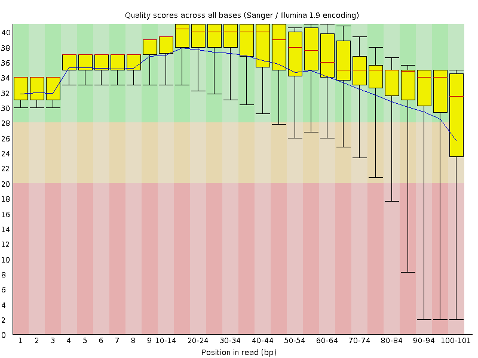
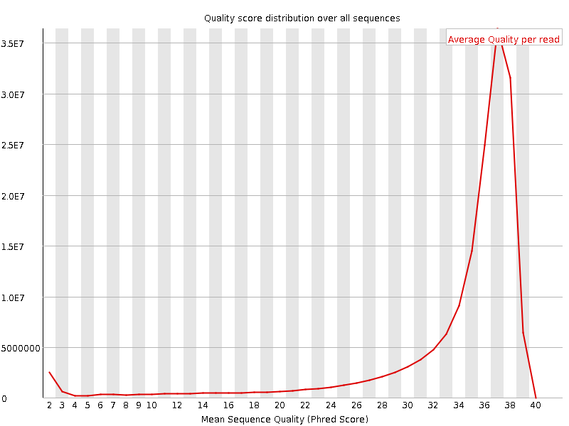
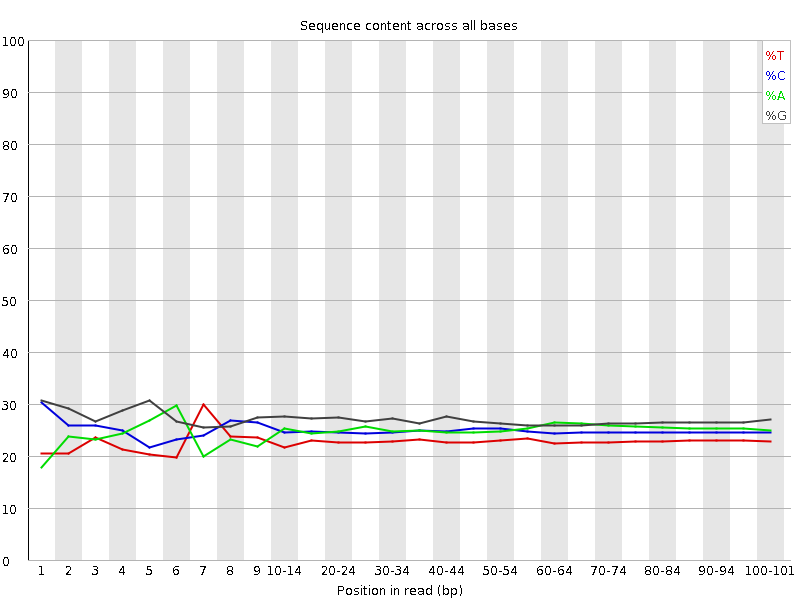
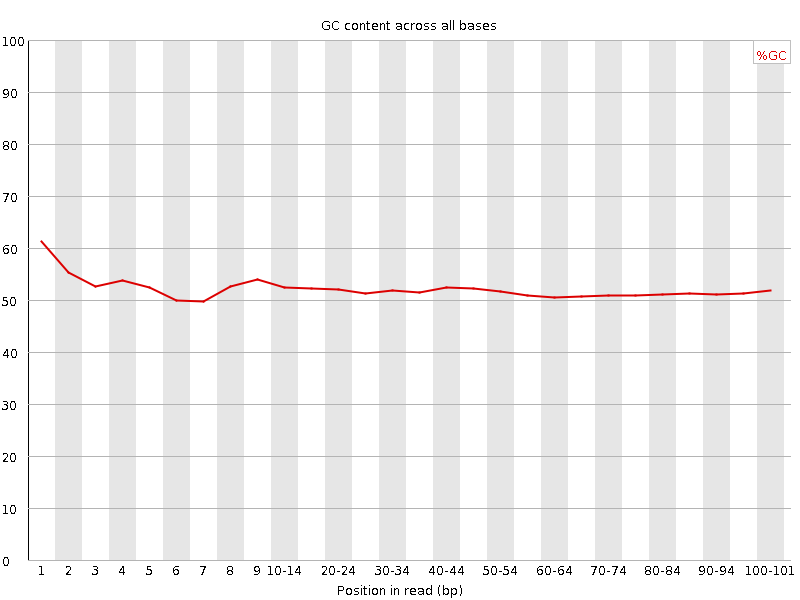
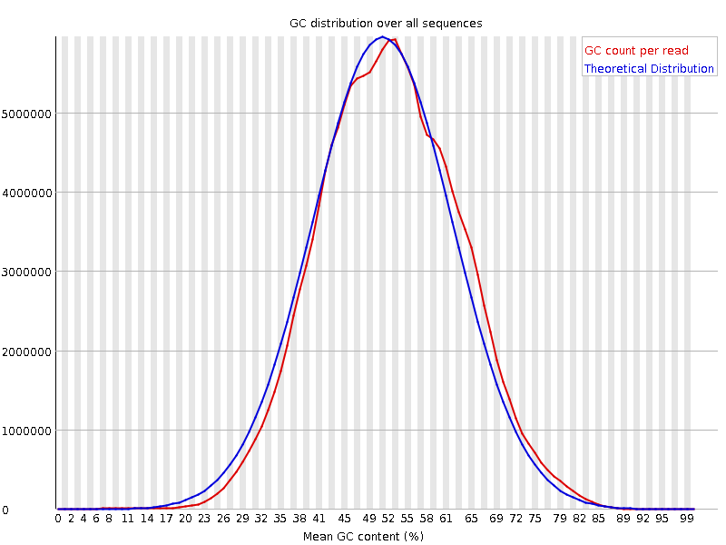
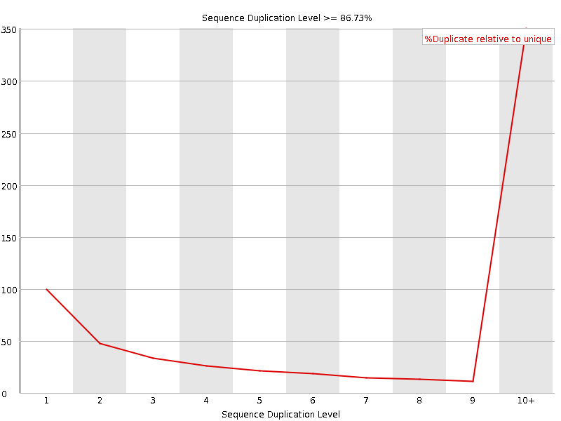
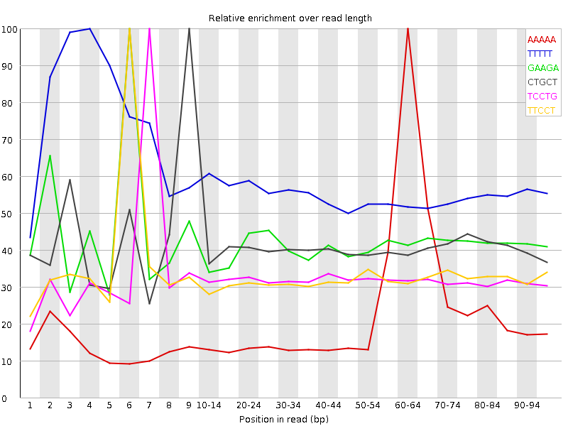

![[OK]](Icons/tick.png) Basic Statistics
Basic Statistics
| Measure | Value |
|---|---|
| Filename | SRR534307_2.fastq |
| File type | Conventional base calls |
| Encoding | Sanger / Illumina 1.9 |
| Total Sequences | 164845832 |
| Filtered Sequences | 0 |
| Sequence length | 101 |
| %GC | 51 |
Per base sequence quality

Per sequence quality scores

![[WARN]](Icons/warning.png) Per base sequence content
Per base sequence content

Per base GC content

Per sequence GC content

Per base N content

Sequence Length Distribution

![[FAIL]](Icons/error.png) Sequence Duplication Levels
Sequence Duplication Levels

Overrepresented sequences
| Sequence | Count | Percentage | Possible Source |
|---|---|---|---|
| CGGCATTCCTGCTGAACCGAGATCGGAAGAGCGTCGTGTAGGGAAAGAGT | 336243 | 0.20397421998513132 | Illumina Single End PCR Primer 1 (100% over 31bp) |
Kmer Content

| Sequence | Count | Obs/Exp Overall | Obs/Exp Max | Max Obs/Exp Position |
|---|---|---|---|---|
| AAAAA | 70293130 | 4.286327 | 18.365507 | 60-64 |
| TTTTT | 37233730 | 3.7015646 | 6.5355887 | 4 |
| GAAGA | 55321895 | 2.9719002 | 7.1667433 | 6 |
| CTGCT | 35001850 | 2.5040178 | 6.148646 | 9 |
| TCCTG | 32742520 | 2.3423865 | 7.2924805 | 7 |
| TTCCT | 25524135 | 2.1452127 | 6.6214695 | 6 |
| CCTGC | 32576935 | 2.1428509 | 5.703238 | 8 |
| GGAAG | 41788340 | 2.1070492 | 6.247683 | 5 |
| AAGAG | 34415025 | 1.8487802 | 6.1588144 | 7 |
| GGGGG | 36638125 | 1.6274873 | 5.140046 | 40-44 |
| AGAGC | 26398150 | 1.4378092 | 6.858227 | 8 |
| CGGAA | 16638465 | 0.9062353 | 6.1604095 | 4 |
| GAGCG | 17531230 | 0.8962363 | 6.054589 | 9 |
| TCGGA | 12987050 | 0.779998 | 6.250882 | 3 |
| GATCG | 12907180 | 0.7752012 | 7.6433706 | 1 |
| ATCGG | 11186115 | 0.67183447 | 7.5578775 | 2 |